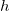

=\lim_{h \to 0} \frac{f(x+h)-f(x)}h")
内容 |
この関数は、データセットに微分を実行します。ある点における微分は、その点とその点にもっとも近い隣接した2点間の勾配の平均を取って計算されます。欠損値がある場合無視されます。
Xデータが等間隔な場合、Savitzky-Golay を適用できますが、等間隔でない場合、この手法では信頼できる結果を得ることができません。
この関数を使用するには、
| 再計算 |
分析結果の再計算を制御します。
詳細は、以下をご覧下さい。分析結果の再計算 |
|---|---|
| 入力 |
入力データ範囲(曲線)を指定します。 範囲制御についてはこちらを確認してください：入力データを指定する |
| 微分 |
微分の階数を指定します。 |
| スムージング |
スムージングの方法を指定します。
|
| 出力 |
出力範囲を指定します。 範囲制御についてはこちらを確認してください：結果の出力 |
| 微分曲線のプロット |
微分曲線をプロットするかどうかを指定します。 |
関数の微分は次のように定義されます。
 が十分に小さければ、中央差分の関数式の変換を使用して微分を近似できます。
Originは、中央差分の関数式の変換によって、離散データを扱い、 点 とその最近傍の2点間の勾配の平均を取って、その点における微分を計算します。

離散データポイントに適用される微分関数を記述することができます。
微分の際にスムージングをするとき、等間隔の  に対してSavitzky-Golayメソッドを使用して微分を計算します。
に対してSavitzky-Golayメソッドを使用して微分を計算します。
まず、補間によって \!") を得ます。
を得ます。
そして、 の微分は以下のようになります。
=na_nx^{n-1}+(n-1)a_{n-1}x^{n-2}+...+a_1")